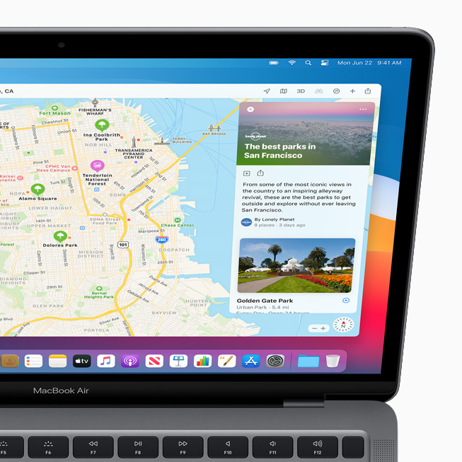

ابل اعلنت رسميا عن اصدار ماك Big Sur تحت اصدار رقم 11
هذا التحديث هو تغير كبير جدا وهو حسب كلام ابل اكبر تغيير للماك من وقت اصداره
في هذا الموضوع سوف استعرض لكم اكبر التغييرات في هذا التحديث
الخلفية الجديدة
عن نفسي من اهم الاشياء التي تصدر مع الماك هي الخلفيه فهي دائما تعبر عن النظام واسمه لاكن الغريب هذه المره انه عكس المعتاد هناك عده خلفيات منها بالفن التجريدي ومنها بالجبال هنا جميع الخلفيات
هذه ليست كل الخلفيات هناك عده خلفيات للجبال منها الوضع الليلي الكامل لتحميل الملف الكامل بدقه كامل(صيغهHEIC):
{kind=link}
{kind=link}
التصميم
تغير تصميم الماك بشكل كبير جدا في هذا التحديث ابل ادخلت الشفافية و الظلال في الماك
تم تغير تصميم الدوك في الماك بحيث الان اصبح له اطراف دائريه, تتماشى مع لغة التصميم الجديدة.

ايضا تم تغيير الايقونات في النظام
ايضا تم تغيير طريقه عرض التنبيهات في النظام
تحديث كبير لمتصفح سفاري
في متصفح سفاري الجديد تم تغيير التصميم ليتبع لغه تصميم ابل الجديدة ايضا ابل اضافت حمايه من التتبع, بحيث الان متصفح سفاري يظهر لك خدمات التتبع التي تم توقيفها, خدمه شبيهها بمتصفح فايرفوكس.
ايضا تم تغيير طريقه عرض النوافذ في المتصفح بحيث الان اصبحث تظهر ايقونات الموقع ومع ابقاء الماوس فوق النافذه تظهر عينه صغيره من الموقع
بالاضافه ان متصفح سفاري اصبح يدعم الترجمه من داخل المتصفح
تطبيق الرسائل(iMessage):
تم تغيير تطبيق الرسائل في هذا الاصدار الماك بشكل كبير ايضا, من حيث التصميم والميزات, تم نقل نفس التغييرات من التحديث الجديد من iOS اصبح الان من الممكن استخدام وتعديل ال memoji في الماك
وايضا تم تغيير طريقه اختيار الصور لتكون عمليه البحث عن الصور او الفيديوهات او GIFs اسهل
 ايضا الان اصبح بامكانك تثبيت المحادثات في اعلى البرنامج لتكون عمليه الوصول اليها اسهل
ايضا الان اصبح بامكانك تثبيت المحادثات في اعلى البرنامج لتكون عمليه الوصول اليها اسهل
تطبيق الخرائط
ابل اعادت تصميم تطبيق الخرائط من الصفر للماك بواجهه جديدة بالكامل وتصميم يتبع لغه التصميم الجديدة مع حواف دائريه وتاثيرات عمق و شفافية ابل اضافت وضع الدراجة على الخرائط بالاضافه الى السماح بالتجوال داخل المباني يمكنك ايضا مشاركة الوجهه الخاصه بك مع اصدقائك طبعا بعد ما تقرر وجهتك يمكنك ارسالها للايفون الخاص بك

برنامج جديد لتشغل الانظمه الوهمية من ابل للماك
ابل اعلنت عن برنامج جديد لشتغل الانظمه الوهميه خاص للماك لمحاكه مثلا لينكس او ويندوز
اذا كان جهاز الماك الخاص بك يستخدم معالجات ابل الجديد
يمكنك تشغيل تطبيقات الايفون والايباد بشكل مباشر على الماك بدون الحاجه الى اي نوع من الانظمه الوهميه
اظهار المعلومات التي يتتبعها البرنامج من الجهاز في الاب ستور
بحيث يظهر للمستخدم اذا البرنامج يستخدم الموقع او له حق في الوصول الى جهات الاتصالات الخ.
الان انتهينا من اهم التغييرات في الواجهه
اهم تغيير في النظام بشكل عام ان هذا هو اول نظام ماك يدعم معالجات ARM الجديدة, من ابل. وابل اطلقت برنامج Rosetta 2 الجديد, لتشغيل برامج انتل على اجهزه التي تستخدم معالجاتها. بالاضافه اصبح للمطوريين امكانيه دعم المعالجات بشكل سهل, اذا كان البرنامج مبني في xcode. للمزيد من التفاصيل حول تجيهزات ابل للمعالجات الجديد اضغط هنا
حاليا النظام بالوضع التجريبي يمكنك تنزيله من الاب ستور اذا كان لديك حساب مطور او استخدم هذا الموقع لتنزيل النسخه
او الحل الاسهل هو استخدام برنامج gibmacos مع اختيار نسخ المطورين وضع اعلى اصدار مسموح هو 10.16(الاسم الداخلي)
ما رايكم بالتحديث؟